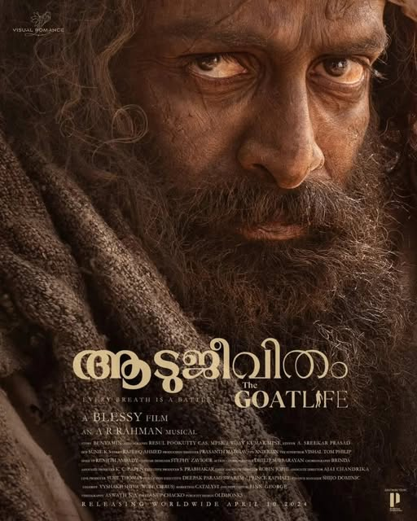

Director: ബെന്യാമിൻ
Review by: പ്രിയ രാധാകൃഷണൻ
ബെന്യാമിന്റെ അക്ഷരങ്ങളിലൂടെ അറിഞ്ഞ ആടുജീവിതം ഇന്ന് അഭ്രപാളികളിൽ കണ്ടു. നോവലിലെ നജീബിന്റെ തുടക്കത്തിലേ സുന്ദരജീവിതവും സ്വപ്നങ്ങളും പിന്നീട് വന്നുചേർന്ന നരകയാതനകളും ഒട്ടും മാറ്റുകുറയാതെ സിനിമയിൽ കണ്ടറിയാം. ആടുജീവിതം എന്ന പേര് അന്വർത്ഥമാക്കുന്ന ചില കാര്യങ്ങൾ നോവലിലുണ്ടായിരുന്നു. ഒറ്റപ്പെടലിന്റെ മൂർദ്ധന്യത്തിൽ മൃഗങ്ങളുമായി താദാത്മ്യം പ്രാപിക്കുന്നതും അവയോടൊപ്പം തിന്നും കുടിച്ചും ഉറങ്ങിയും പേരിട്ടു വിളിച്ചു സ്നേഹിച്ചും ഒക്കെ കഴിഞ്ഞുകൂടുന്നത് അത്ര തന്നെ സിനിമയിലില്ല. (നോവലിന്റെ വലിയൊരു ശതമാനം സിനിമയിൽ കൊണ്ടുവരാൻ കഴിഞ്ഞിട്ടില്ല എന്നത് ഒരു പോരായ്മയായി തോന്നുകില്ല, കണ്ടിരിക്കുമ്പോൾ). രണ്ടാം പകുതിയിൽ ആടുകളേയില്ല... മണൽകൂമ്പാരങ്ങൾ നിറഞ്ഞ മരുഭൂമിയിൽ അലയുന്ന നായകൻ. എല്ലാവരുടെയും അഭിനയം തകർപ്പൻ തന്നെ. പൃഥ്വിരാജിന്റെ മേക്കോവർ അത്ഭുതകരം. ആ ബോഡിട്രാൻസ്ഫോർമേഷൻ... കാണികൾ കയ്യടിച്ചതും അതിനായിരുന്നു. മേക്കപ്പ്... എല്ലാവരുടെയും അതിഗംഭീരം... ക്യാമറ എത്ര മികവോടെ കൈകാര്യം ചെയ്തു എന്ന് മനസ്സിലാക്കാൻ ആടിന്റെ കണ്ണുകളിൽ നായകന്റെ മുഖം കാണിക്കുന്നത് മുതൽ മണൽത്തരികളുടെ ചലനം വരേ തെളിവുകളാണ്... ഇബ്രാഹിം ഖദിദി എന്ന രക്ഷകൻ മണൽകുന്നിൽ ധ്യാനിച്ചിരിക്കുമ്പോൾ പിന്നിൽ സൂര്യചക്രവാളം... ജന്മനാടിനെയോർത്തു കണ്ണീർ വാർക്കുന്ന നജീബിന്റെ തഴുകി നിൽക്കുന്ന ആട്ടിൻകുട്ടി... (അതിനെ മകൾക്കിടാൻ കരുതി വച്ചിരുന്നപേര് ചൊല്ലി വിളിക്കുമെന്ന് പ്രതീക്ഷിച്ചു..) രക്ഷപ്പെടലിന്റെ ഒടുവിൽ ഹോട്ടലിന്റെ പേര് മലയാള അക്ഷരങ്ങൾ ബാക്ക്ഗ്രൗണ്ടിൽ കാണുന്നത്... ബ്ലസി എന്ന അനുഗ്രഹീത സംവിധായകന്റെ 16 വർഷത്തെ തപസാഫല്യംതന്നെ ഈ സിനിമ... അവാർഡുകൾ ഉറപ്പ്... നിങ്ങളനുഭവിക്കാത്തജീവിതം നിങ്ങൾക്ക് കെട്ടുകഥ തന്നെയായിരിക്കും എന്നത് മനസ്സിൽ നിന്ന് മായുകില്ല, ഒപ്പം കണ്ണു നനയിച്ച അഭിനയത്തികവുമായി പൃഥ്വിരാജും.. സിനിമ പ്രതീക്ഷക്കൊത്ത നിലവാരമുള്ളത് തന്നെ... കാണാൻ സ്വന്തം കുടുംബത്തോടൊപ്പം റീഡേഴ്സ് ഫോറം കുടുംബാംഗങ്ങളിൽ ചിലരും അടുത്ത ഇരിപ്പിടങ്ങളിൽ തന്നെ ഉണ്ടായിരുന്നു എന്നതിൽ പ്രത്യേക സന്തോഷം..☺️